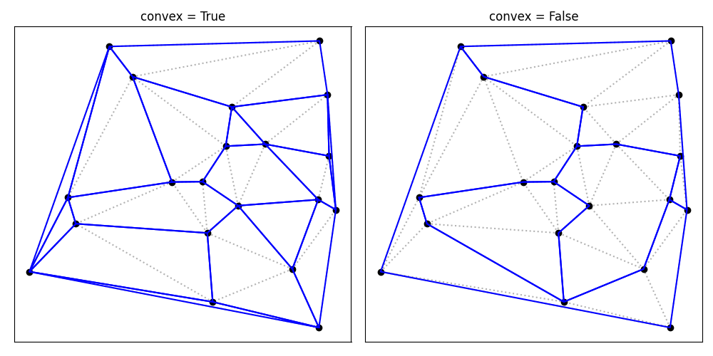
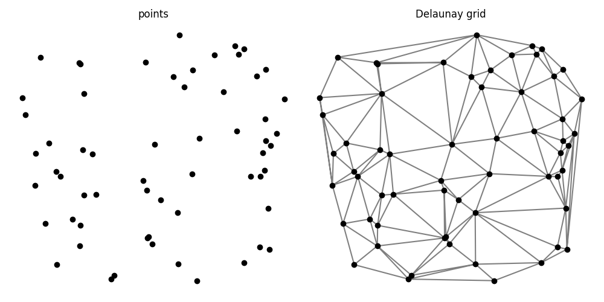

Sample usage¶
Getting started¶
Starting with importing relevant packages and creating some points in the plane:
In [1]: import polygonation.polygonate as pg
In [2]: import numpy as np
In [3]: points = np.random.rand(20, 2)
We can then find a set of convex polygons that contain the given points, using
the Polygonate class. The .shapes attribute then gives the points in each polygon:
In [4]: plgn1 = pg.Polygonate(points)
In [5]: plgn1.shapes
Out[5]:
[[16, 11, 0],
[8, 13, 16],
[3, 7, 19],
[6, 4, 12],
[4, 8, 5, 6],
[10, 11, 17, 1],
[9, 3, 19, 14, 0],
[9, 0, 11, 17],
[1, 17, 9, 3],
[6, 15, 18, 12],
[10, 11, 16, 13],
[1, 3, 2, 10],
[8, 13, 10, 5],
[2, 3, 7, 18, 15],
[2, 10, 5, 6, 15],
[7, 18, 12, 14, 19]]
Using the is_convex function to verify that all polygons are indeed convex:
In [6]: print([pg.is_convex(points[s]) for s in plgn1.shapes])
[True, True, True, True, True, True, True, True, True, True, True, True, True, True, True, True]
If we let go of the convexity criterium, we can find a smaller set of polygons:
In [7]: plgn2 = pg.Polygonate(points, convex=False)
In [8]: plgn2.shapes
Out[8]:
[[9, 1, 17, 11, 10, 13, 8, 16, 0],
[7, 19, 14, 12, 18, 15, 6, 5, 2, 3],
[1, 9, 0, 14, 19, 7, 3, 2, 5, 6, 15, 18, 12, 4, 8, 13, 10, 11, 17]]
Here is a comparison of both polygonations:
Additional options¶
When creating a Polygonate object, the pickedge parameter controls which
edge is removed in each step. Here is a comparison with a larger set of points:
The points and the Delaunay triangular tessellation for this example:
Polygonation results with convex = True:
Polygonation results with convex = False: